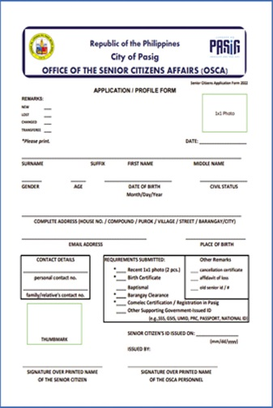
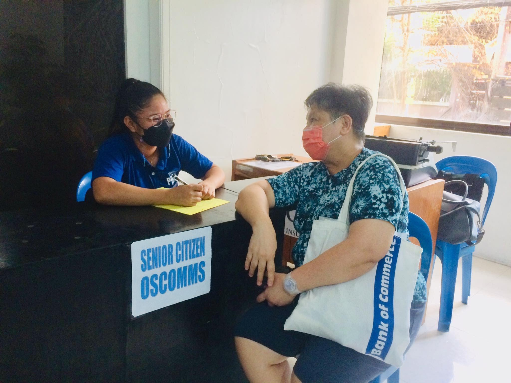
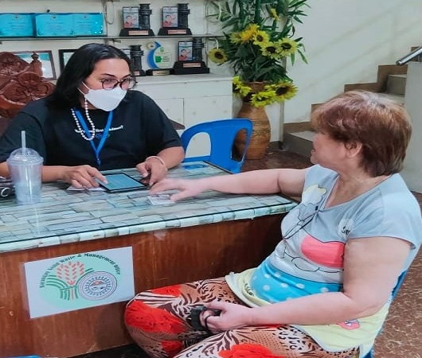

Paano mag-apply ng Senior ID?
- Dapat edad 60 pataas
- Permanenteng residente sa Pilipinas (hindi bababa sa 6 na buwan)
- Ang nasyonalidad ay Filipino
- Senior ID Application Form
- 1x1 na Larawan (2 piraso)
- Birth Certificate or
Baptismal Certificate - Barangay Clearance
Senior Citizen ID / National Senior ID (White Card)
MGA KWALIPIKASYON:
MGA KINAKAILANGAN:

Paano mag pa-Validate para makakuha ng Cash Gift tuwing December?
MGA KINAKAILANGAN:
- Ipa-Photo Copy lamang ang Senior ID at patatakan

Paano mag-apply ng Local Senior Pension?
MGA KWALIPIKASYON:
- Dapat edad 65 pataas
- Walang kahit na ano mang pension (SSS, GSIS at iba pang pension)
- Local Senior Form na makukuha sa Senior Office ng inyong Barangay
MGA KINAKAILANGAN:
Paano mag-apply ng Centenarian?
Kinakailangan ay mapunan lahat ng requirements para ma-qualify sa Centenarian Awarding
- ?
- ?
- ?
Paano mag-apply ng Burial Assistance?
- Death Certificate (certified true copy) - original and photocopy
- 2 Valid IDS (scanned) of the Claimant
- Marriage Contract
- 2 Valid IDs (scanned)
- Special Power of Attorney (SPA) mula sa buhay na asawa
- Marriage Certificate
- Birth Certificate
- Birth Certificate
- Birth Certificate ng namatay at ng Claimant
- Affidavit of "Died Single and No Child"
MGA KINAKAILANGAN PARA SA CLAIMANT:
KUNG CLAIMANT ANG ASAWA:
KUNG ANG CLAIMANT AY ANAK NIYA o may buhay pang asawa:
KUNG ANG CLAIMANT AY KANYANG ANAK / ang namatay ay byuda
KUNG ANG CLAIMANT AY ISANG KAPATID / ang namatay ay walang asawa
MGA KARAGDAGANG PAALALA: